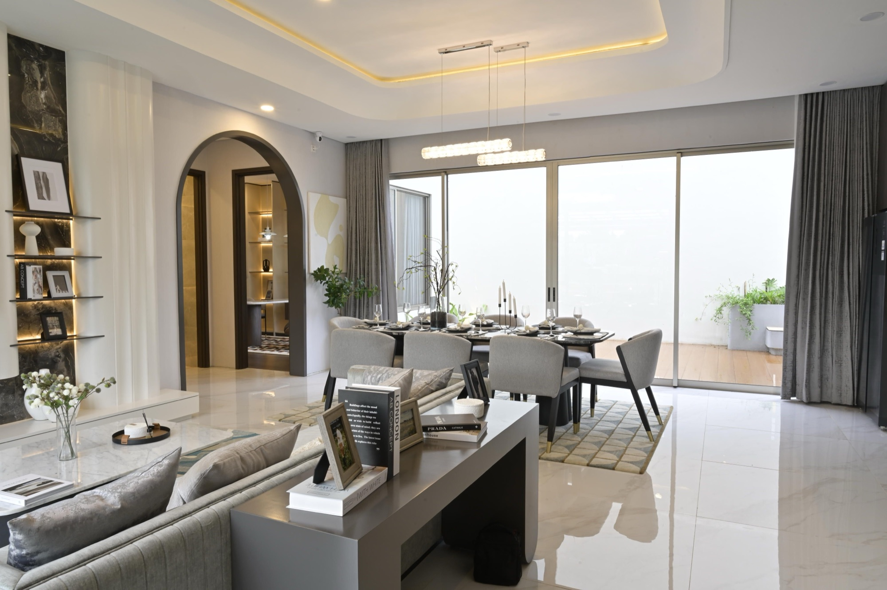

Listen to the life behind the space.
How will the room be used? What needs to feel different? Start with the daily routines, priorities and small frustrations that a floor plan cannot tell us.

A clear idea, shaped carefully. An approach that makes room for both feeling and practical life.
Not because little thought went into it, but because every choice belongs.
How will the room be used? What needs to feel different? Start with the daily routines, priorities and small frustrations that a floor plan cannot tell us.
Explore the arrangement, light and materials together. Look at how one choice changes another, until the space feels coherent.
Refine finishes, junctions, lighting and furniture. Keep returning to the original intention so the small decisions support the whole.
Like the feeling of this place? Let’s talk about a website for your studio.
Start a conversation